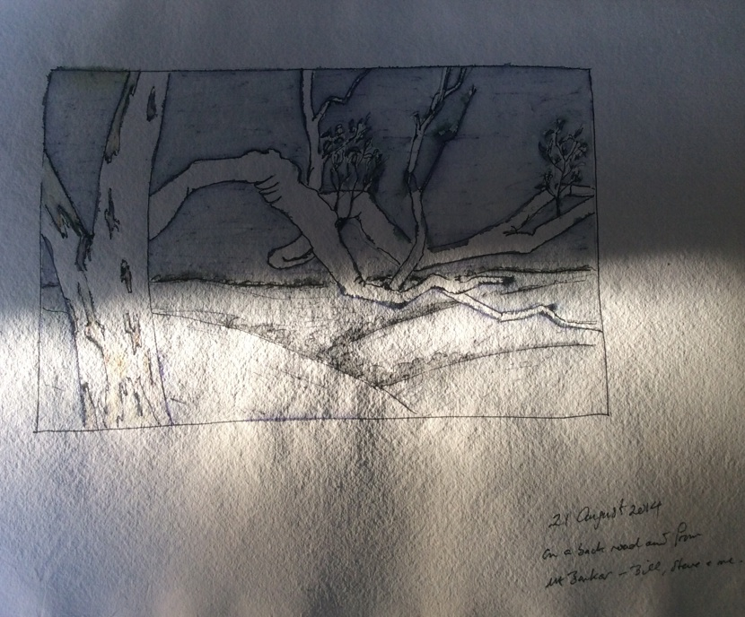
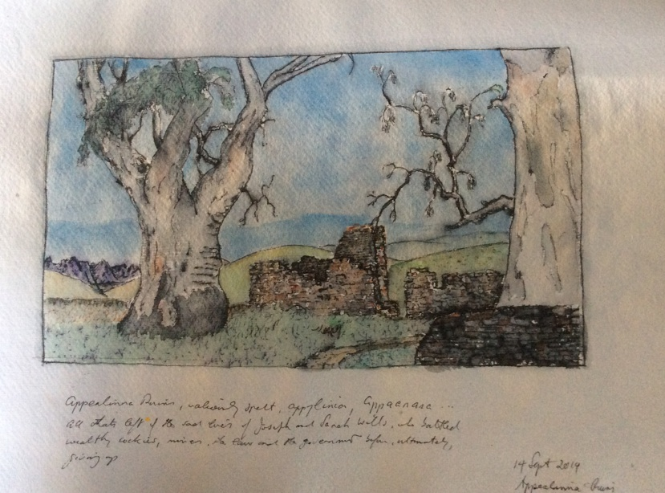
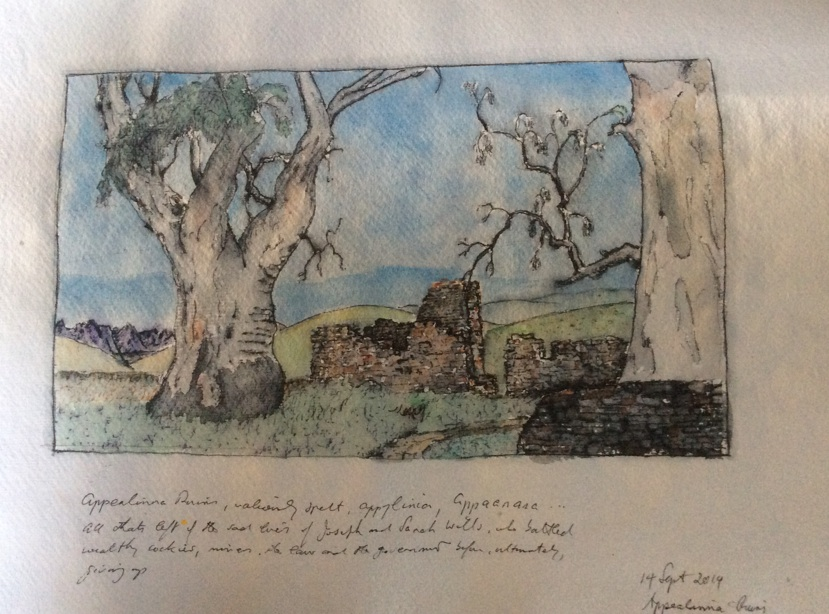
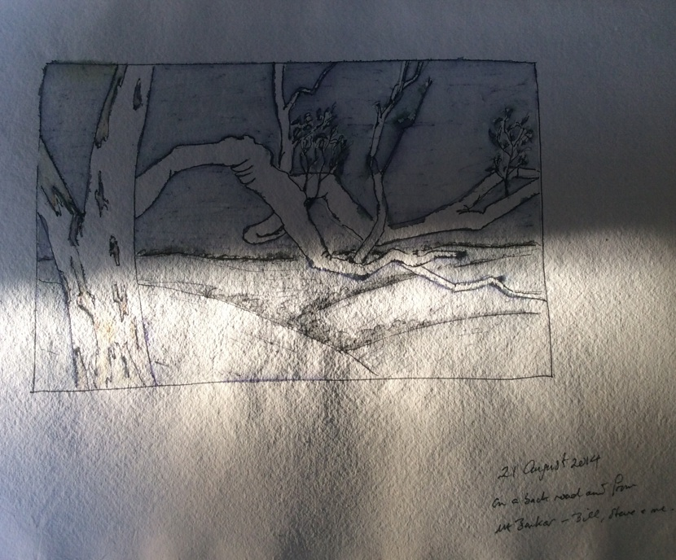
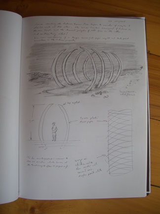
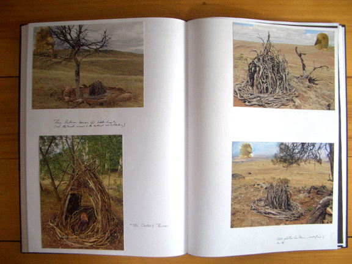
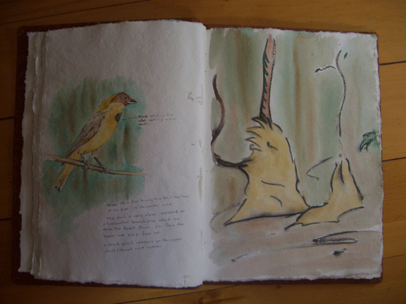
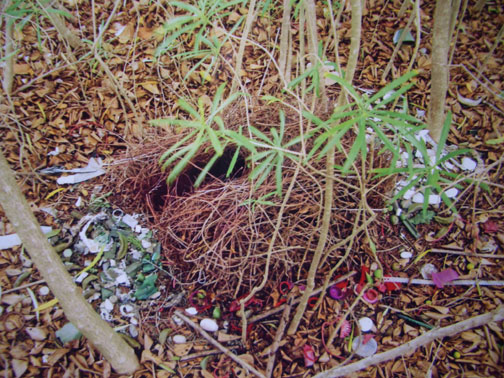
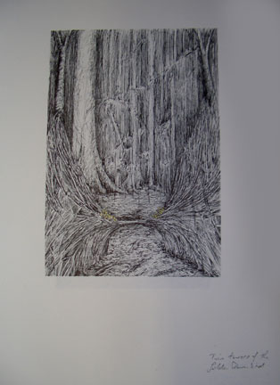
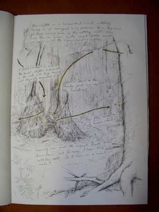

Ian text  Journal, pen and ink, 2014
 Journal, pen and ink, 2014

Journal, pen and ink, 2014
Journal, pen and ink, 2014

Journal, pen and ink, 2014

Journals
Ian text  Journal, pen and ink, 2014


 concept drawing for Palmer Biennial 2010  Manipulated photos from Palmer Biennial and Hahndorf exhibition. Original photos Leo Davis, manipulation Ian Hamilton
Drawing for fluoro tube and sticks from bower of Golden Bowerbird  Journal drawing
Page from journal showing sketches for bower' of Great Bowerbird, Townsville  Bower of Great Bowerbird, Townsville. Photo Leo Davis  drawing showing Golden Bowerbird structure' - from field notes and sketches'
drawing showing Golden Bowerbird structure - from field notes and sketches'  drawing showing Golden Bowerbird structure - from field notes and sketches'
Home | Biography | The Bower Tower Project | Fluro works | Paintings and Drawings | Journals | Prints | Published Writings | Contacts (e mail, phone)